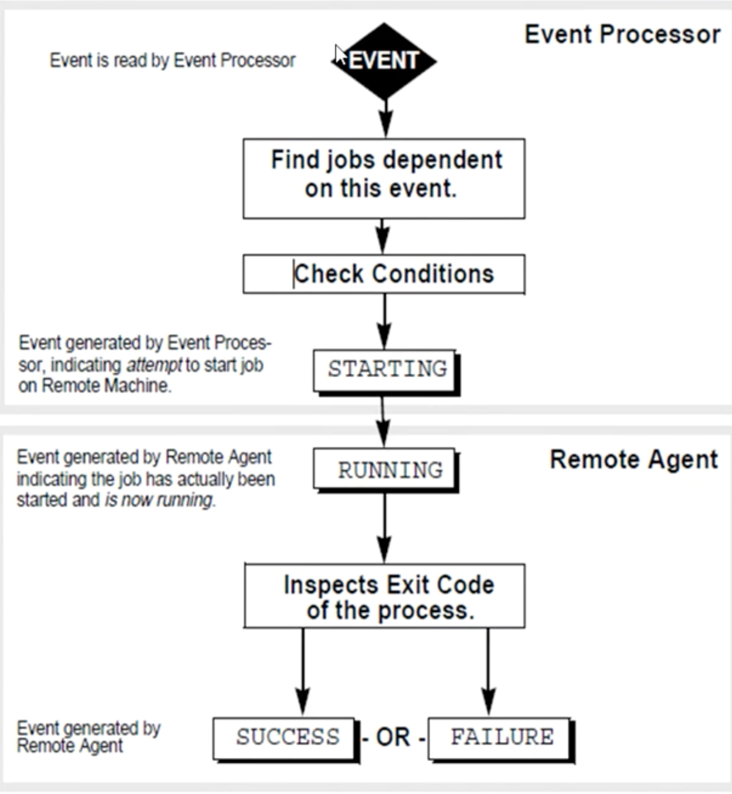

1 Autosys Introduction
1 Autosys Introduction
1-1 What is Autosys
- Autosys is a automated job control system for monitoring, reporting and scheduling.
- A job is any single command, script, executable file.
- Jobs can reside on any configured machine that is attached to network.
1-2 Instance
- An AutoSys instance is one licensed version of AutoSys software running as an AutoSys server with one or more clients, on a single machine or on multiple machines.
- AutoSys instance is defined by the instance ID - a capitalized three-letter identifier defined by the
$AUTOSERVenvironment variable. - An instance uses its own event server and event processor and operates independently of other AutoSys instances
Example: ACE
1-3 Components of Autosys
There are 3 major component of Autosys.
- 1) Event Server
- 2) Scheduler
- 3) Remote agent
1-4 Events
- Autosys is a event driven.
- Manually events are generated using the sendevent command.
2 Why autosys: Event, Sendevent
Why Autosys
- To Automate any process to make business easy
- To Reduce manual Intervention
- To Deliver required results in time
What is an EVENT
- Event is nothing but an action taken on a Job.
- The action on the job is being performed using sendevent.
- AutoSys is completely event-driven; that is, for a job
SEND EVENT
-
You can send events for a variety of purposes, including
- starting or stopping jobs,
- Stopping the Event processor,
- Putting a job on hold and etc.
-
This command is also used to set global variables or cancel a scheduled event.
- The event that is sent, is written to the database, which the event processor(Scheduler) is continually polling.
- The event processor(Scheduler) reads and processes the event.
-
To issue a sendevent on a job, you must have execute permission on that job. Only comments and set global can be sent without regard to permissions.
-
Sendevent can be performed via two ways
- GUI
- COMMANDS

2 Why autosys: Event, Sendevent
SendEvent via Command
sendevent -E START_JOB -J <Job name>
# Start the job (job_load)
sendevent -E FORCE_STARTJOB -J <Job name>
- If you use the sendevent command to send a
FORCE_STARTJOBevent to a job, CA Workload Automation AE immediately starts the job on the machine that is specified in the job definition, regardless of the current load on the machine or thejob_loadvalue that is set for the job.- If you send a
FORCE_STARTJOBevent to a job inON_ICEorON_HOLDstatus, the job's status does not revert to its previous status when it completes. - If you send a
FORCE_STARTJOBevent to a job in RESWAIT status, theFORCE_STARTJOBis ignored and the job remains in the RESWAIT status. - You can remove or alter the resource requirements of the job so the job is no longer in RESWAIT and can be started.
- If you send a
sendevent -E KILLJOB -J <job name>
Indicates that the job ends while it is still in the RUNNING state. The scheduler issues an alarm when a job is terminated.
sendevent -E DELETEJOB -J <Job name>
sendevent -E JOB_ON_HOLD -J <Job name>
sendevent -E JOB_OFF_HOLD -J <Job name>
sendevent -E JOB_ON_ICE -J <Job name>
sendevent -E JOB_OFF_ICE -J <Job name>
-
ON_HOLD: Indicates that the job is on hold and cannot run until you take it off hold.- You can place a job in this status only by sending the
JOB_ON_HOLDevent. - To take a job off hold, send the
JOB_OFF_HOLDevent.
- You can place a job in this status only by sending the
-
ON_ICE: Indicates that the job is removed from the job stream but is still defined.- You can place a job in this status only by sending the
JOB_ON_ICEevent. - To return a job that is on ice to the job stream and resume running it, send the
JOB_OFF_ICEevent.
- You can place a job in this status only by sending the
sendevent -E CHANGE_STATUS -s STATUS -J <Job name>
When the status of a job with cross-instance dependencies changes, the scheduler sends a CHANGE_STATUS event to the remote instance event server while the job in the local instance runs.
The scheduler also sends an equivalent CHANGE_STATUS event to the remote instance for status changes not resulting from a CHANGE_STATUS event, specifically status changes resulting from one of the following:
- Unavailable machine load units, resources or agents prevent a job from running and the scheduler change the status of the job.
- The user changes the status by issuing a sendevent command for one of the following events:
JOB_ON_HOLD,JOB_OFF_HOLD,JOB_ON_ICE,JOB_OFF_ICE,JOB_ON_NOEXEC,JOB_OFF_NOEXEC.
sendevent -E <any event> -c "comment to be displayed"
sendevent -E SET_GLOABL -G "Global variable=value"
3 Type of Machines
Objectives
-
Types of machines
- Server machine
- Client Machine
-
Types of Jobs
- Command Jobs
- File Watcher Jobs
- Box Jobs
Types Of Machines
- Server Machine:
An Autosys server machine is a machine on which the scheduler, the event server, and/or both reside.
- Client Machine:
An Autosys client machine is one on which the remote agent is installed. This is the machine where the job actually runs
Types Of Jobs
Command Job: Usually executes a command script or run a program.
- Run under a user id on remote machine.
- A single action performed on a validated machine.
- Can comprise of only one command to be executed in one job.
File Watcher Job: Is a remote process that monitors the existence and size of a file.
- If it detects file - success.
- It can search only for one file when the job is been defined.
Box Job:
- Is a container of jobs which comprises of Command ,File watcher and even box jobs.
- It itself performs no action but it can trigger other jobs to run.
5 Autosys: Job status, Box Logic
Objectives
- Autosys Job Status
- BOX Logic
- What Happens when BOX Runs
Autosys Job Status
- Autosys keeps track of the current state, or status , of every job.
-
Here ,are the different status of the job:
- INACTIVE(IN)
- ACTIVATED(AC)
- STARTING(ST)
- RUNNING(RU)
- SUCCESS(SU)
- FAILURE(FA)
- TERMINTED(TE)
- RESTART(RE)
- RESOURCE WAIT(RW)
ON_HOLD(OH)ON_ICE(OI)
-
INACTIVE: The job has pot vet been processed. Either the job has never been run, or its status was intentionally altered.
- ACTIVATED: The top-level box that this job is in now in the RUNNING state, but the job itself has not started yet.
- STARTING: The event processor has initiated the start job procedure with the Remote Agent.
- RUNNING: The job is ruming. If the job is a box job, this value simply means that jobs within the box may be started. If it is a command or file watcher job, the value means that the process is actually running on the remote machine.
- SUCCESS: By default, only the exit code "0" is interpreted as "Success".
- FAILURE: By default, any code which is greater than "0" is interpreteLd as " F ilure" .
- TERMINATED: The job has been terminated while in the Running state i.e if a KILLJOB event has been passed or it can also be terminated if it has exceeded the maximum run time.
- RESTART: The job was unable to start due to hardware or application problems, and has been scheduled to restart.
- SUCCESS: By default, only the exit code "0" is interpreted as "Success".
- FAILURE: By default, any code which is greater than "0" is interpreteLd as " Failure" .
- TERMINATED: The job has been terminated while in the Running state i.e if a KILLJOB event has been passed or it can also be terminated if it has exceeded the maximum run time.
- RESTART: The job was unable to start due to hardware or application problems, and has been scheduled to restart.
- RESOURCE WAIT: The job can logically run(that its all starting conditions have been met),but there are not enough machine resources available.
ON_HOLD: This job is on hold and will not run until its offholded.ON_ICE: This job is removed from all conditions and logic, but is still define to autosys.It will remain ONICE until its officed
BOX LOGIC
Default Box Job Behavior
- Jobs run only once per box execution.
- Jobs in a box will start only if the box itself is running.
- Boxes should be used primarily for jobs with the same starting conditions.
- As long as any job in a box is running, the box remains in RUNNING state; the box cannot complete until all jobs have run.
- By default, a box will return a status SUCCESS only when all the jobs in the box have run and the status of all the jobs is success.
- By default, a box will return a status FAILURE only when all jobs in the box have run and the status of one or more of the jobs is failure.
- Unless otherwise specified, a bo will run indefinitely until it reaches a status SUCCESS or FAILURE
- Changing the state of a box to INACTIVE(through the sendevent command) changes the state of all the jobs in the box to INACTIVE
What happens when a Box Runs
-
As a box starts running, all the jobs in the box (including sub-boxes )change to status ACTIVATED, meaning they are eligible to run.
-
Then each job is analyzed for additional starting conditions. All jobs with no additional starting conditions are started, without any implied ordering or prioritizing.
-
Jobs with additional starting conditions remain in the ACTIVATED state until those additional dependencies have been met.
6 Difference between onhold and onice
Objectives
JOB_ON_HOLDJOB_OFF_HOLDJOB_ON_ICEJOB_OFF_ICEDIFF.B/WON HOLD and ON ICE
JOB_ON_HOLD
- Puts the job specified in
-Jjob name "On Hold." When a job is "On Hold,"- it will not be started, and downstream dependent jobs will not run.
- A box cannot successfully complete if a job within it is
ON_HOLD. - If the job is already STARTING or RUNNING, You cannot put it
ON_HOLD.
Syntax:
sendevent -E JOB_ON_HOLD -J <Job name>
JOB_OFF_HOLD
Takes the jobs specified in -J job_name "Off Hold." If the starting conditions are met, the job will be started.
Syntax:
sendevent -E JOB OFF HOLD -j <Job name>
JOB_ON_ICE
- Prevents the job from running.
- The dependencies and run criteria (such as date/time) is not tracked while it's on ice .
Syntax:
sendevent -E JOB_ON_ICE -J <Job name>
JOB_OFF_ICE
- Takes the job specified in -J
job_name"Off Ice." - The job acts as a brand new when taken off ice. Meaning dependencies need to be newly satisfied before the job will run again.
Syntax:
sendevent -E JOB_OFF_ICE -J <Job name>
Diff B/W ONHOLD & ONICE
ON_HOLD
- Putting a job
ON_HOLDmeans the job will not be started and any downstceam dependent jobs will not run - When an "on hold" job is taken off hold, if its starting conditions are already met. it will be scheduled to run, and it will run.
- EVENTS
sendevent -E JOB_ON_HOLD -j jobname -c "tkt #"
sendevent -E JOB_OFF_HOLD -j jobname -c "tkt #"
sendevent -E TOB_ON_HOLD -J lock_out -c ma# 1234"
sendevent -E JOB_OFF_HOLD -J lock_out -c "T1CT#1234"
- STATUS
JOB_ON_HOLD ---- OH
JOB_OFF_HOLD ---- IN (Depends on previous state when onhold)
- A job can not be STARTING or RUNNING to have it put "on hold".
ON_ICE
- Putting a job
ON_ICEmeans the job will not be started and any downstream dependent jobs could run depending on those dependent jobs' start conditions. - When an 'on ice" job is taken "off ice" its starting conditions are already met it will not start.
- It will not start until its starting conditions reoccur -- just like a new job
- EVENTS
sendevent -E JOB_ON_ICE -j jobname -c "tkt #"
sendevent -E JOB_OFF_ICE -j jobname -c "tkt #"
sendevent -E TOB_ON_ICE -J lock_out -c ma# 1234"
sendevent -E JOB_OFF_ICE -J lock_out -c "T1CT#1234"
- STATUS
JOB_ON_ICE ---- OI
JOB_OFF_ICE ---- IN (always)
- A job can not be STARTING or RUNNING to have it put "on ice".
7 How to setup future event and cancel event
Objectives
- SET FUTURE SEND EVENT
- CANCEL FUTURE SEND EVENT
How to set future send event
This is used to schedule an event in the future Date or Time
Syntax:
sendevent -E JOB_ON_HOLD <JOB NAME> -T "MM/DD/YY YYHH:MM"
Example
Put the job on hold at 9:00 a.m., today
sendevent -E JOB_ON_HOLD -J TESTJOB -T "12/11/2016 09:00"
To take the job off hold at 2:00 p.m
sendevent -E JOB_OFF_HOLD -J TESTJOB -T "12/11/2016 14:00"
How To cancel future send evemt
This is used to schedule an event in the future Date or Time
Syntax:
sendevent -E <JOB_ON_HOLD> <JOB NAME> -J "MM/DD/YYYY HH:MM"